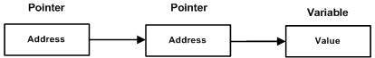

A pointer to a pointer is a form of multiple indirection or a chain of pointers. Normally, a pointer contains the address of a variable. When we define a pointer to a pointer, the first pointer contains the address of the second pointer, which points to the location that contains the actual value as shown below.

A variable that is a pointer to a pointer must be declared as such. This is done by placing an additional asterisk in front of its name. For example, following is the declaration to declare a pointer to a pointer of type int −
int **var;
When a target value is indirectly pointed to by a pointer to a pointer, accessing that value requires that the asterisk operator be applied twice, as is shown below in the example −
#include <iostream> using namespace std; int main () { int var; int *ptr; int **pptr; var = 3000; // take the address of var ptr = &var; // take the address of ptr using address of operator & pptr = &ptr; // take the value using pptr cout << "Value of var :" << var << endl; cout << "Value available at *ptr :" << *ptr << endl; cout << "Value available at **pptr :" << **pptr << endl; return 0; }
When the above code is compiled and executed, it produces the following result −
Value of var :3000 Value available at *ptr :3000 Value available at **pptr :3000